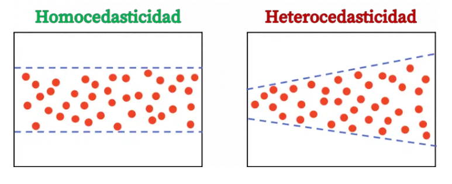

4.AnálisisEstad
Pruebas estadísticas en R
Estadística: Ciencia que permite describir una población o inferir relaciones entre características de esta, basados en una muestra representativa (no sesgada).
Los análisis estadísticos nos permiten inferir patrones sobre las poblaciones a partir de una muestra o muestras. Algunos ejemplos, saber si el promedio de altura de dos tipos de vegetación difiere entre sí (p.ej., vegetación conservada o secundaria), o si la altura de un árbol depende de su diámetro.
Algunos conceptos básicos:
- Muestra vs Censo.
Observaciones.
Unidad muestral.
En el ejemplo de los datos del INFyS:
- Población: vegetación de México.
- Muestra: datos recabados en el INFyS.
- Observación: Los datos de cada árbol.
- Unidad muestral: Conglomerado de parcelas de muestreo.
- Normalidad y varianza.
- Homogeneidad de varianzas.

Muestras aleatorias e independientes.
Sesgo
- Hipóstesis nula y alternativa.
Hipótesis nula normalmente implica que NO hay diferencias significativas.
Estadístico. Estadístico de cada prueba, por ejemplo, t, F, r.
Tipos de errores.
Significancia. p-value o probabilidad de cometer error tipo 1.
Nivel de significancia. Valor de corte definido a priori. Comúnmente en ciencias biológicas se usa el valor de 0.05.
Dentro de R existen varias funciones para hacer análisis estadísticos. Sin embargo, aquí veremos un paquete que funciona muy bien con el tidyverse.
Pruebas estadísticas con Rstatix
Vamos a ver cómo hacer pruebas usando el paquete Rstatix que es amigable con el tidyverse. Existen las funciones para hacer análisis estadísticos con base R como:
| Variables a comparar | Prueba paramétrica | Prueba no paramétrica |
|---|---|---|
| Una media o mediana vs: un valor, otra media o mediana, o media o mediana de datos pareada. | t_test() | wilcox_test() |
| Más de dos medias o medianas | anova_test(), tukey_hsd() | kruskal_test() |
| Dos variables relación | cor_test() | cor_test() |
| Dos variables dependencia | lm() | - |
Diferencias entre pruebas paramétricas y no paramétricas
- Las paramétricas comparan medias, las no paramétricas medianas.
- Las paramétricas usan la desviación estándar como medida de dispersión, las paramétricas usan rangos (acomodo de valores en orden de menor a mayor).
- La media se ve muy afectada por valores extremos, mientras que la mediana no.
- Las pruebas paramétricas suponen una distribucióm normal de los datos, las no paramétricas, no.
- Las pruebas paramétricas suelen suponer igualdad de varianzas, las no paramétricas, no.
- Las paramétricas tienen utilidad baja con una n <= 20 - 30, mientras que las no paramétricas, tienen una utilidad alta en esos casos (tiene que ver con la varianza alta de muestras chiquitas).
- Las pruebas paramétricas tienen alto poder estadístico (son más estrictas), mientras que las no paramétricas, tienen poder medio (son más laxas).
- Ambas requieren muestras aleatorias e independientes.
Vamos usar las pruebas rstatix.
Primero instalar el paquete.
install.packages("rstatix")Installing package into 'C:/Users/Jonathan/AppData/Local/R/win-library/4.4'
(as 'lib' is unspecified)Error in contrib.url(repos, "source"): trying to use CRAN without setting a mirrorLeer los mismos datos del inventario nacional forestal. Hacer el preprocesamiento relizado en clases pasadas de sustituir datos de más de 99999 por NA en las variables de altura y diámetro, eliminar entradas con NA en ambas columnas, seleccionar columnas de interés y renombrar columnas.
library(tidyverse)── Attaching core tidyverse packages ──────────────────────── tidyverse 2.0.0 ──
✔ dplyr 1.1.4 ✔ readr 2.1.5
✔ forcats 1.0.0 ✔ stringr 1.5.1
✔ ggplot2 3.5.1 ✔ tibble 3.2.1
✔ lubridate 1.9.3 ✔ tidyr 1.3.1
✔ purrr 1.0.2
── Conflicts ────────────────────────────────────────── tidyverse_conflicts() ──
✖ dplyr::filter() masks stats::filter()
✖ dplyr::lag() masks stats::lag()
ℹ Use the conflicted package (<http://conflicted.r-lib.org/>) to force all conflicts to become errorslibrary(readxl)
library(rstatix)
Adjuntando el paquete: 'rstatix'
The following object is masked from 'package:stats':
filterdatos <- read_excel("INFyS_2015_2020_Michoacan_de_Ocampo_lHwLKIM.xlsx",
sheet = "Arbolado")Warning: Expecting numeric in BW19313 / R19313C75: got 'NULL'Warning: Expecting numeric in BX19313 / R19313C76: got 'NULL'# Preprocesamiento limpieza de datos
datos <- datos |>
mutate(across(c(AlturaTotal_C3, DiametroNormal_C3), ~ifelse(.x >= 99999, NA, .x))) |>
# Eliminar NA
drop_na(AlturaTotal_C3) |>
drop_na(DiametroNormal_C3) |>
# Seleccionar columnas de interés
select(IdConglomerado,DESCRIP_S7_C3,AlturaTotal_C3, DiametroNormal_C3, biomasa_kg_C3) |>
# Renombrar columnas
rename("ParcelaId" = "IdConglomerado",
"TipoVeg" = "DESCRIP_S7_C3",
"Altura" = "AlturaTotal_C3",
"DAP" = "DiametroNormal_C3",
"Biomasa" = "biomasa_kg_C3") Hacer dos subsets de datos para distintas pruebas estadísticas. Uno con solo dos tipos de vegetación y otro con 3. Ojo con convertir tipo de vegetación como factor después de hacer la selección de tipos de vegetación de interés, si no, va a marcar error al hacer la pruebas estadísticas.
Consultar las ayudas de varias funciones de rstatix para ver cómo se ingresa la información. Ahí dice que en muchas fórmulas pongas primero el nombre de la variable numérica y después el nombre de la variable factor. Por ejemplo, veamos tukey_hsd.
help(tukey_hsd)Generar dos subsets de los datos, uno para hacer pruebas estadísticas de comparación de dos medias o medianas, y uno para tres o más.
datos2 <- datos |>
filter(TipoVeg %in% c("BOSQUE DE PINO-ENCINO", "SELVA BAJA CADUCIFOLIA")) |>
mutate(across(TipoVeg, ~as.factor(.x)))
datos3 <- datos|>
filter(TipoVeg %in% c("BOSQUE DE PINO-ENCINO", "SELVA BAJA CADUCIFOLIA", "BOSQUE DE PINO")) |>
mutate(across(TipoVeg, ~as.factor(.x)))Estadísticas descriptivas
datos |>
get_summary_stats(type = "mean_sd")# A tibble: 4 × 4
variable n mean sd
<fct> <dbl> <dbl> <dbl>
1 ParcelaId 25258 61221. 2777.
2 Altura 25258 8.14 5.28
3 DAP 25258 16.9 9.77
4 Biomasa 25258 123. 255. datos |>
freq_table(TipoVeg) # A tibble: 32 × 3
TipoVeg n prop
<chr> <int> <dbl>
1 AGRICULTURA DE RIEGO ANUAL 6 0
2 AGRICULTURA DE RIEGO ANUAL Y PERMANENTE 9 0
3 AGRICULTURA DE RIEGO PERMANENTE 119 0.5
4 AGRICULTURA DE TEMPORAL ANUAL 154 0.6
5 AGRICULTURA DE TEMPORAL ANUAL Y PERMANENTE 75 0.3
6 AGRICULTURA DE TEMPORAL PERMANENTE 5 0
7 ASENTAMIENTOS HUMANOS 12 0
8 BOSQUE CULTIVADO 154 0.6
9 BOSQUE DE ENCINO 1817 7.2
10 BOSQUE DE ENCINO-PINO 857 3.4
# ℹ 22 more rowsdatos |>
identify_outliers(Altura)# A tibble: 1,578 × 7
ParcelaId TipoVeg Altura DAP Biomasa is.outlier is.extreme
<dbl> <chr> <dbl> <dbl> <dbl> <lgl> <lgl>
1 68781 VEGETACIÓN SECUNDARIA A… 17.5 18.4 206. TRUE FALSE
2 67481 VEGETACIÓN SECUNDARIA A… 17.4 33.3 569. TRUE FALSE
3 67484 BOSQUE DE PINO-ENCINO 17.5 41.7 610. TRUE FALSE
4 68027 BOSQUE DE PINO-ENCINO 18 36.5 589. TRUE FALSE
5 68027 BOSQUE DE PINO-ENCINO 19.5 27.6 283. TRUE FALSE
6 66591 BOSQUE DE PINO 27.4 36 605. TRUE TRUE
7 66301 BOSQUE DE PINO 23.4 44.2 835. TRUE FALSE
8 68781 VEGETACIÓN SECUNDARIA A… 19.8 49.6 999. TRUE FALSE
9 67481 VEGETACIÓN SECUNDARIA A… 23 37 891. TRUE FALSE
10 67481 VEGETACIÓN SECUNDARIA A… 21.8 47.5 1340. TRUE FALSE
# ℹ 1,568 more rowsNormalidad
H0: Distribución de datos no significativamente distinta a una normal Prueba de normalidad de los datos.
Shapiro test solo funciona con menos de 5000 observaciones.
datos |>
slice_sample(n = 4999) |>
shapiro_test(Altura)# A tibble: 1 × 3
variable statistic p
<chr> <dbl> <dbl>
1 Altura 0.870 1.11e-53Comparación de varianzas
H0: Distribución de datos no signfificativamente distinta de una con homogeneidad de varianzas.
Prueba de homogeneidad de varianzas.
levene_test()
datos2 |>
levene_test(DAP ~ TipoVeg)# A tibble: 1 × 4
df1 df2 statistic p
<int> <int> <dbl> <dbl>
1 1 7445 453. 1.48e-97Comparación de dos medias o medianas
Comparación medias
H0: medias no significativamente distintas.
Seleccionemos bosque pino-encino y selva baja caducifolia Diametros entre árboles
datos2 |>
t_test(DAP ~ TipoVeg)# A tibble: 1 × 8
.y. group1 group2 n1 n2 statistic df p
* <chr> <chr> <chr> <int> <int> <dbl> <dbl> <dbl>
1 DAP BOSQUE DE PINO-ENCINO SELVA BAJA … 5307 2140 26.6 7287. 2.40e-149Biomasa por parcela
datos2 |>
group_by(TipoVeg, ParcelaId) |>
summarise(AGB = (sum(Biomasa)/1000)*10000/1600,
.groups = "drop") |>
t_test(AGB ~ TipoVeg)# A tibble: 1 × 8
.y. group1 group2 n1 n2 statistic df p
* <chr> <chr> <chr> <int> <int> <dbl> <dbl> <dbl>
1 AGB BOSQUE DE PINO-ENCINO SELVA BAJA CAD… 65 19 6.11 67.2 5.6e-8Comparación medianas
H0: medianas no significativamente distintas.
Seleccionemos bosque pino-encino y selva baja caducifolia. Diametros entre árboles
datos2 |>
wilcox_test(DAP ~ TipoVeg)# A tibble: 1 × 7
.y. group1 group2 n1 n2 statistic p
* <chr> <chr> <chr> <int> <int> <dbl> <dbl>
1 DAP BOSQUE DE PINO-ENCINO SELVA BAJA CADUCIF… 5307 2140 7041795 2.70e-59Biomasa por parcela
datos2 |>
group_by(TipoVeg, ParcelaId) |>
summarise(AGB = (sum(Biomasa)/1000)*10000/1600,
.groups = "drop") |>
wilcox_test(AGB ~ TipoVeg)# A tibble: 1 × 7
.y. group1 group2 n1 n2 statistic p
* <chr> <chr> <chr> <int> <int> <dbl> <dbl>
1 AGB BOSQUE DE PINO-ENCINO SELVA BAJA CADUCIFO… 65 19 999 4.63e-5Comparación de tres o más medias o medianas
Comparación medias
H0: TODAS medias no significativamente distintas.
A partir de aquí usamos datos3. Seleccionemos bosque pino-encino y selva baja caducifolia Diametros entre árboles
datos3 |>
anova_test(DAP ~ TipoVeg)ANOVA Table (type II tests)
Effect DFn DFd F p p<.05 ges
1 TipoVeg 2 10434 264.126 1.26e-112 * 0.048Biomasa por parcela
datos3 |>
group_by(TipoVeg, ParcelaId) |>
summarise(AGB = (sum(Biomasa)/1000)*10000/1600,
.groups = "drop") |>
anova_test(AGB ~ TipoVeg)ANOVA Table (type II tests)
Effect DFn DFd F p p<.05 ges
1 TipoVeg 2 116 11.539 2.69e-05 * 0.166Posthoc
H0: medias no significativamente distintas. Diametros entre árboles
datos3 |>
tukey_hsd(DAP ~ TipoVeg)# A tibble: 3 × 9
term group1 group2 null.value estimate conf.low conf.high p.adj p.adj.signif
* <chr> <chr> <chr> <dbl> <dbl> <dbl> <dbl> <dbl> <chr>
1 Tipo… BOSQU… BOSQU… 0 -1.31 -1.87 -0.757 9.9e-8 ****
2 Tipo… BOSQU… SELVA… 0 -6.46 -7.15 -5.77 0 ****
3 Tipo… BOSQU… SELVA… 0 -5.15 -5.77 -4.52 0 **** Biomasa por parcela
datos3 |>
group_by(TipoVeg, ParcelaId) |>
summarise(AGB = (sum(Biomasa)/1000)*10000/1600,
.groups = "drop") |>
tukey_hsd(AGB ~ TipoVeg)# A tibble: 3 × 9
term group1 group2 null.value estimate conf.low conf.high p.adj
* <chr> <chr> <chr> <dbl> <dbl> <dbl> <dbl> <dbl>
1 TipoVeg BOSQUE DE PINO BOSQU… 0 -13.1 -36.4 10.2 3.81e-1
2 TipoVeg BOSQUE DE PINO SELVA… 0 -62.6 -94.2 -30.9 2.23e-5
3 TipoVeg BOSQUE DE PINO-… SELVA… 0 -49.5 -78.5 -20.5 2.67e-4
# ℹ 1 more variable: p.adj.signif <chr>datos3 |>
group_by(TipoVeg, ParcelaId) |>
summarise(AGB = (sum(Biomasa)/1000)*10000/1600,
.groups = "drop") |>
anova_test(AGB ~ TipoVeg)ANOVA Table (type II tests)
Effect DFn DFd F p p<.05 ges
1 TipoVeg 2 116 11.539 2.69e-05 * 0.166Comparación medianas
H0: medianas no significativamente distintas.
Seleccionemos bosque pino-encino y selva baja caducifolia Diametros entre árboles
datos3 |>
kruskal_test(DAP ~ TipoVeg)# A tibble: 1 × 6
.y. n statistic df p method
* <chr> <int> <dbl> <int> <dbl> <chr>
1 DAP 10437 463. 2 2.84e-101 Kruskal-WallisBiomasa por parcela
datos3 |>
group_by(TipoVeg, ParcelaId) |>
summarise(AGB = (sum(Biomasa)/1000)*10000/1600,
.groups = "drop") |>
kruskal_test(AGB ~ TipoVeg)# A tibble: 1 × 6
.y. n statistic df p method
* <chr> <int> <dbl> <int> <dbl> <chr>
1 AGB 119 21.7 2 0.0000199 Kruskal-WallisPosthoc
H0: medianas no significativamente distintas. Diametros entre árboles
datos3 |>
dunn_test(DAP ~ TipoVeg)# A tibble: 3 × 9
.y. group1 group2 n1 n2 statistic p p.adj p.adj.signif
* <chr> <chr> <chr> <int> <int> <dbl> <dbl> <dbl> <chr>
1 DAP BOSQUE DE P… BOSQU… 2990 5307 -7.63 2.37e-14 2.37e-14 ****
2 DAP BOSQUE DE P… SELVA… 2990 2140 -21.2 1.85e-99 5.54e-99 ****
3 DAP BOSQUE DE P… SELVA… 5307 2140 -16.6 7.53e-62 1.51e-61 **** Biomasa por parcela
datos3 |>
group_by(TipoVeg, ParcelaId) |>
summarise(AGB = (sum(Biomasa)/1000)*10000/1600,
.groups = "drop") |>
dunn_test(AGB ~ TipoVeg)# A tibble: 3 × 9
.y. group1 group2 n1 n2 statistic p p.adj p.adj.signif
* <chr> <chr> <chr> <int> <int> <dbl> <dbl> <dbl> <chr>
1 AGB BOSQUE DE PINO BOSQU… 35 65 -1.11 2.69e-1 2.69e-1 ns
2 AGB BOSQUE DE PINO SELVA… 35 19 -4.50 6.85e-6 2.06e-5 ****
3 AGB BOSQUE DE PIN… SELVA… 65 19 -4.03 5.67e-5 1.13e-4 *** Comparación proporciones
H0: proporciones no significativamente distintas.
df_chi <- datos3 |>
mutate(m20 = ifelse(DAP >= 20, 1, 0)) |>
group_by(TipoVeg, m20) |>
count() |>
ungroup() |>
pivot_wider(names_from = m20,
values_from = n) |>
select(-TipoVeg) |>
as.matrix()
dimnames(df_chi) <- list(
TipoVeg = c("BOSQUE DE PINO-ENCINO", "SELVA BAJA CADUCIFOLIA", "BOSQUE DE PINO"),
m20 = c("0", "1")
)
chisq_test(df_chi)# A tibble: 1 × 6
n statistic p df method p.signif
* <int> <dbl> <dbl> <int> <chr> <chr>
1 10437 496. 2.11e-108 2 Chi-square test **** No son iguales las proporciones de árboles de >= 20 cm de DAP.
Correlación
H0: variables no relacionadas.

Pearson: Paramétrica
datos3 |>
select(DAP, Altura, Biomasa) |>
cor_test(vars = c(DAP, Altura, Biomasa),
vars2 = c(DAP, Altura, Biomasa),
method = "pearson")# A tibble: 9 × 8
var1 var2 cor statistic p conf.low conf.high method
<chr> <chr> <dbl> <dbl> <dbl> <dbl> <dbl> <chr>
1 DAP DAP 1 Inf 0 1 1 Pearson
2 DAP Altura 0.53 63.7 0 0.515 0.543 Pearson
3 DAP Biomasa 0.77 125. 0 0.766 0.782 Pearson
4 Altura DAP 0.53 63.7 0 0.515 0.543 Pearson
5 Altura Altura 1 Inf 0 1 1 Pearson
6 Altura Biomasa 0.65 86.8 0 0.636 0.658 Pearson
7 Biomasa DAP 0.77 125. 0 0.766 0.782 Pearson
8 Biomasa Altura 0.65 86.8 0 0.636 0.658 Pearson
9 Biomasa Biomasa 1 Inf 0 1 1 PearsonSpearman: No paramétrica
datos3 |>
select(DAP, Altura, Biomasa) |>
cor_test(vars = c(DAP, Altura, Biomasa),
vars2 = c(DAP, Altura, Biomasa),
method = "spearman")# A tibble: 9 × 6
var1 var2 cor statistic p method
<chr> <chr> <dbl> <dbl> <dbl> <chr>
1 DAP DAP 1 0 0 Spearman
2 DAP Altura 0.47 100234296506. 0 Spearman
3 DAP Biomasa 0.74 50133986981. 0 Spearman
4 Altura DAP 0.47 100234296506. 0 Spearman
5 Altura Altura 1 0 0 Spearman
6 Altura Biomasa 0.77 43261244015. 0 Spearman
7 Biomasa DAP 0.74 50133986981. 0 Spearman
8 Biomasa Altura 0.77 43261244015. 0 Spearman
9 Biomasa Biomasa 1 0 0 SpearmanRegresión lineal
H0: variables no relacionadas.
\(x) Esto es lo mismo que function(x).
Crear una función anónima para poder usar el pipe nativo |>
mod <- datos3 |>
select(DAP, Altura, Biomasa) |>
(\(x) lm(Altura ~ DAP, data = x))()
mod
Call:
lm(formula = Altura ~ DAP, data = x)
Coefficients:
(Intercept) DAP
4.0709 0.3088 Alternativa usando pipe de magrittr y el operador ..
datos3 |>
select(DAP, Altura, Biomasa) %>%
lm(Altura ~ DAP, data = .)
Call:
lm(formula = Altura ~ DAP, data = .)
Coefficients:
(Intercept) DAP
4.0709 0.3088 Sacar coeficientes
mod |>
tidy()# A tibble: 2 × 5
term estimate std.error statistic p.value
<chr> <dbl> <dbl> <dbl> <dbl>
1 (Intercept) 4.07 0.0997 40.9 0
2 DAP 0.309 0.00485 63.7 0